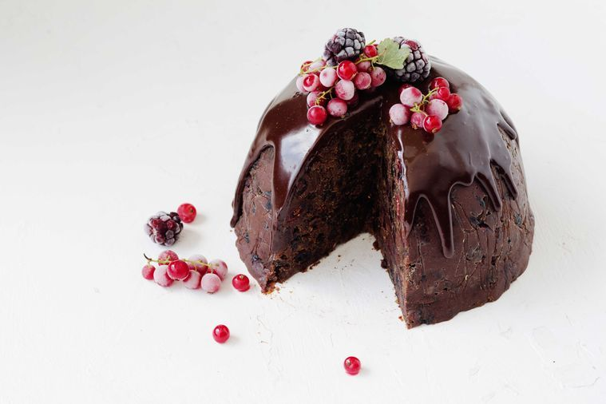

Christmas Pudding

Description
The pudding that will save your christmas!
Ingredients
- 125g each boysenberries & redcurrants
- 100g dark chocolate, chopped
- 1/4 cup (60ml) maple syrup
- 150ml pure (thin) cream
- 4 cups (725g) mixed dried fruit (we used a mix of sultanas, peel, cranberries, chopped dates and glace cherries)
- 400g store-bought madeira or sponge cake, crumbled
- 100g dark chocolate, melted, cooled
- 1 tbs cocoa
- 50g unsalted butter, melted, cooled
- 1/2 cup (125ml) sherry or brandy
- 1 tsp each ground cinnamon & freshly grated nutmeg
- 1/2 tsp each allspice & ground cloves
Steps
- Line a 1.5L (6 cup) bowl with plastic wrap, leaving plenty overhanging. Place the boysenberries and redcurrants in a ziplock bag and freeze until ready to serve.
- For the Christmas pudding, place all ingredients in a bowl and stir well to combine. Spoon into the lined bowl and press down to compress mixture. Cover with overhanging plastic wrap, then chill for at least 2 hours or overnight.
- For the glaze, place the chocolate, maple syrup and cream in a heatproof bowl set over a saucepan of simmering water (don’t let bowl touch water), stirring until melted and smooth. Set aside to cool. Drizzle over pudding and top with frozen berries to serve.